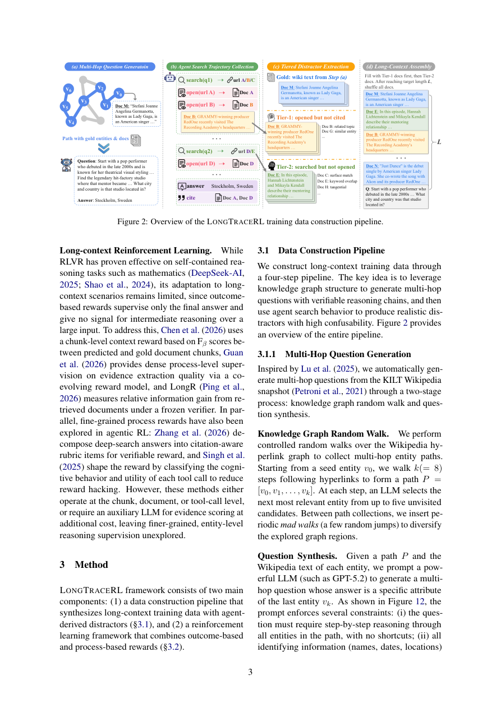

#1
★ 8/10
LongTraceRL: Learning Long-Context Reasoning from Search Agent Trajectories with Rubric Rewards
LongTraceRL：从搜索智能体轨迹中学习长文本推理并结合评分奖励

图 Figure · Page 3 of paper
🎯 用"评分奖励"训练AI在超长文本中精准多跳推理
Teaching LLMs to reason over long, distracting documents using search traces and fine-grained rubric rewards.
🗣️ 一句话比喻 · Plain-English Analogy就像培训一个侦探：不仅要让他在满屋子的假线索（而不是几张纸）中找到真正的证据，还要像老师一样检查他的每一步推理是否有理有据——而不是只看最后他猜没猜对凶手。Think of it like training a detective: instead of giving them a tiny folder with obvious clues, you bury the real evidence inside a massive pile of realistic red herrings — and then grade not just whether they named the right suspect, but whether each step of their deduction was backed by actual evidence from the file.
| 维度 | 中文 | English |
|---|---|---|
| ❓ 待解决 的问题 |
AI语言模型在阅读超长文档时，经常"找不到重点"——文章越长、干扰信息越多，它越容易迷失。现有训练方法给的"练习题"太简单，干扰文段不够真实，而且只告诉模型最终答案对不对，无法指导它一步步推理的过程。就像让学生做卷子只给对错不给部分分，聪明的学生也很难真正学到推理方法。 | Large language models often get lost when reading very long documents full of distracting information — they struggle to find the right clues and connect them step by step. Existing training methods use distractors that are too easy to ignore, and only reward the model for getting the final answer right, with no guidance on whether the reasoning steps in between were any good. This is like grading a math test by only checking the final answer and ignoring all the working-out. |
| 💡 解决 的亮点 |
- 🧩 **分层干扰文段**：利用搜索智能体的真实浏览轨迹，构造"高混淆度"（看过但没引用）和"低混淆度"（搜到但没打开）两类干扰文档，比随机抽样的干扰更真实、更难。 - 🏆 **评分奖励（Rubric Reward）**：不只看最终答案，沿着推理链逐个检查关键实体是否被正确引用，像老师批改作文一样给过程打分。 - ✅ **仅对正确答案施加过程奖励**：只对最终答案正确的回答做精细评分，避免模型"钻空子"（奖励黑客），同时区分同样正确答案中推理质量的高低。 | - 🧩 **Tiered Distractors**: Uses real search-agent browsing histories to create two levels of tricky fake documents — ones the agent read but ignored, and ones it never even opened — making training far harder and more realistic than random sampling. - 🏆 **Rubric Reward**: Instead of just checking the final answer, it scores each reasoning step by checking whether the model correctly identified the key entities along the reasoning chain — like a teacher grading the working-out, not just the answer. - ✅ **Positive-Only Strategy**: Fine-grained process rewards are only applied when the final answer is already correct, preventing the model from gaming the scoring system while still distinguishing good reasoning from lucky guesses. |
| 🧪 实验 内容 |
研究者在三个不同规模的推理大模型（4B到30B参数）上进行实验，评估五个长文本推理基准测试，包括MuSiQue、HotpotQA、2WikiMultihopQA、LongBench等。基线方法涵盖标准监督微调（SFT）、仅有结果奖励的RLVR，以及其他近期长文本推理方法。评估指标主要为F1分和精确匹配（EM）。 | Experiments were run on three reasoning LLMs ranging from 4B to 30B parameters, evaluated across five long-context benchmarks including MuSiQue, HotpotQA, 2WikiMultihopQA, and LongBench. Baselines included standard supervised fine-tuning (SFT), outcome-only RLVR, and other recent long-context reasoning approaches. The main metrics were F1 score and exact match (EM). |
| 📊 实验 结果 |
LongTraceRL在五个长文本基准上持续超越所有强基线。例如，在MuSiQue上相比仅有结果奖励的RLVR提升约4-6个F1点；在HotpotQA和2WikiMultihopQA上也取得同等或更优的成绩。在7B模型上，LongTraceRL的综合表现超过了参数量更大的30B基线模型，显示出更强的训练效率。所有三种规模的模型均受益于分层干扰和评分奖励的组合，证明了方法的规模普适性。 | LongTraceRL consistently outperforms all strong baselines across five long-context benchmarks. For example, on MuSiQue it improves F1 by approximately 4–6 points over outcome-only RLVR; it achieves comparable or better results on HotpotQA and 2WikiMultihopQA. Notably, the 7B model trained with LongTraceRL surpasses 30B baseline models in aggregate performance, demonstrating strong training efficiency. All three model sizes benefit from the combination of tiered distractors and rubric rewards, confirming the method scales well. |
| 🏁 结论 | LongTraceRL证明了：通过构造更真实的干扰文档和细粒度的过程奖励，可以显著提升大语言模型在超长文本中的多跳推理能力，且在不同模型规模上均有效。 | LongTraceRL demonstrates that combining realistic, search-trajectory-derived distractors with step-level rubric rewards significantly improves LLM multi-hop reasoning over long documents — and this improvement holds consistently across model sizes from 4B to 30B. |
| 🔗 论文 链接 |
arXiv: 2605.31584v1 · 📥 PDF | |
⚙️ Method · 方法详解
LongTraceRL分两步走：第一步造"高质量难题"。研究者在知识图谱上随机游走，自动生成需要多步推理的问题（比如"A的老师的出生地在哪？"）。然后让一个搜索智能体去网上找答案，把它真正读过却没引用的文章作为"高混淆干扰"，把它搜到但没打开的文章作为"低混淆干扰"，组合成超长、超难的上下文。第二步设计"评分奖励"。训练时，模型每生成一个推理过程，系统就对照标准答案中的关键实体逐一检查：每找到一个关键节点就加分，最终答案错了则不启用过程奖励。这样模型既要答对，推理过程也要言之有据。
LongTraceRL works in two stages. First, it builds super-hard training problems: it walks through a knowledge graph to create multi-hop questions (like "Where was the teacher of person A born?"), then sends a search agent to find the answers online. Documents the agent actually read but chose not to cite become "high-confusability" distractors, and documents it saw in search results but never opened become "low-confusability" distractors — together forming brutally challenging long documents. Second, it trains the model with a rubric reward: for each response with a correct final answer, it checks step-by-step whether the model mentioned the right key entities along the reasoning chain, awarding partial credit like a teacher marking an exam, and only applying this detailed scoring when the final answer is already correct to stop the model from cheating.
📐 Key Formulas · 关键公式
\[R(y, y^*) = \mathbb{1}[\text{EM}(y, y^*)] \cdot \frac{1}{|E|} \sum_{e \in E} \mathbb{1}[e \in y]\]
💡 评分奖励公式：只有当最终答案完全正确时（EM=1），才对推理过程中每个关键实体e是否出现在回答y中进行计分，所有关键实体的命中率平均后作为最终奖励。
The rubric reward formula: only if the final answer is exactly correct (EM=1) does the system check what fraction of the key reasoning entities (E) the model mentioned in its response — the reward is the average hit rate over all required entities.
🌟 Why It Matters · 为什么重要
现实世界的AI助手（如法律文书分析、医疗文献检索）需要在海量文本中精确定位并整合多个关键信息点，LongTraceRL让这类任务更加可靠。更重要的是，它提供了一种低成本、自动化的方式来生成高质量训练数据和奖励信号，降低了构建强大长文本推理模型的门槛。
Real-world AI applications — like reading legal contracts, scanning medical literature, or analyzing lengthy reports — demand exactly this kind of precise, multi-step reasoning over long texts, and LongTraceRL makes AI significantly more reliable at it. It also offers a scalable, automated pipeline for generating high-quality training data, which could accelerate progress across many document-heavy AI use cases.